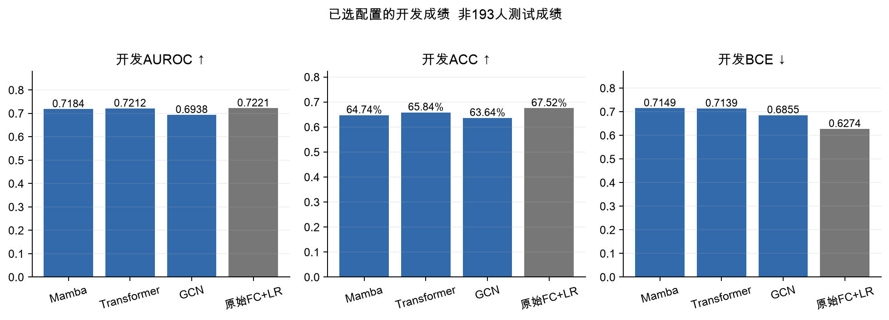
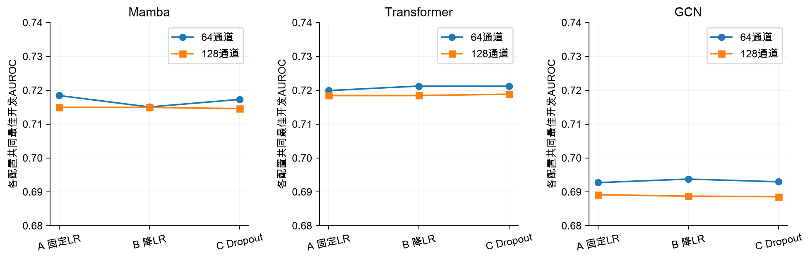
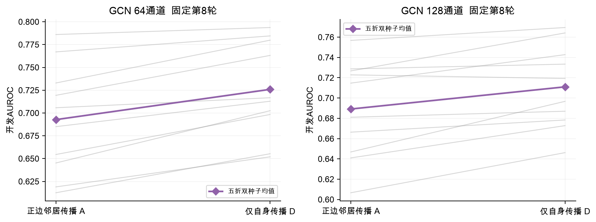
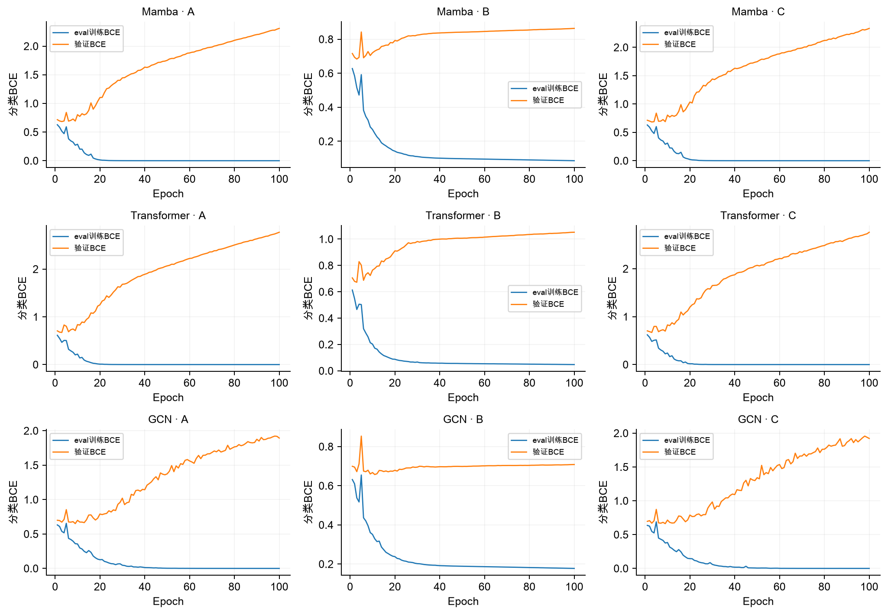
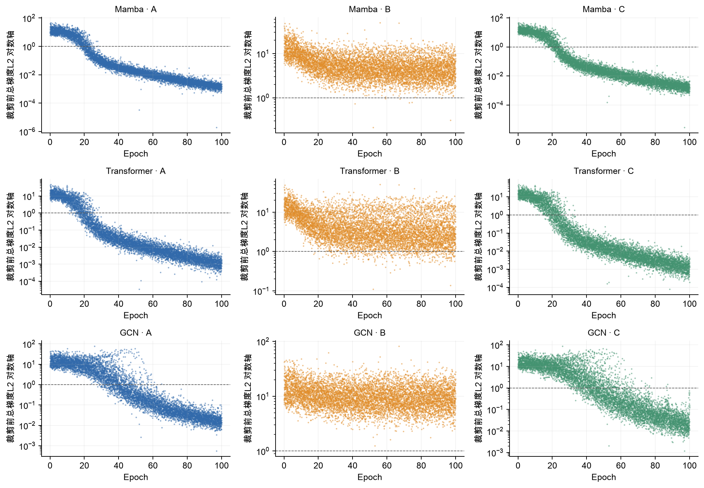
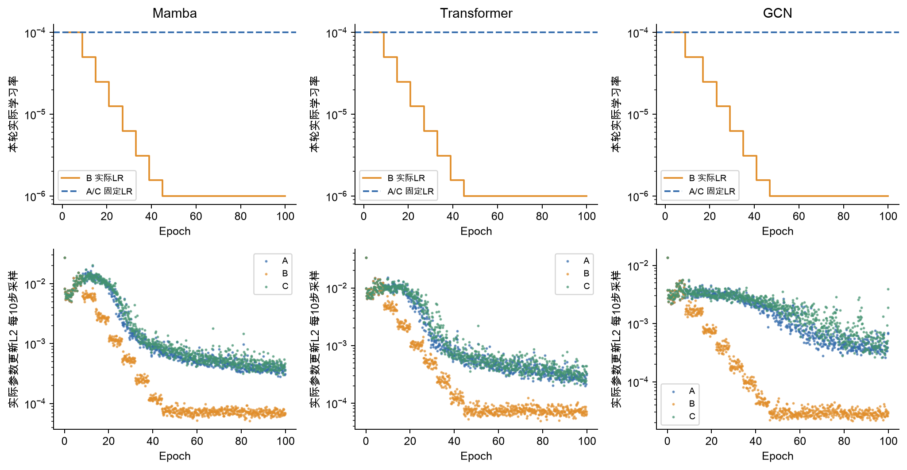
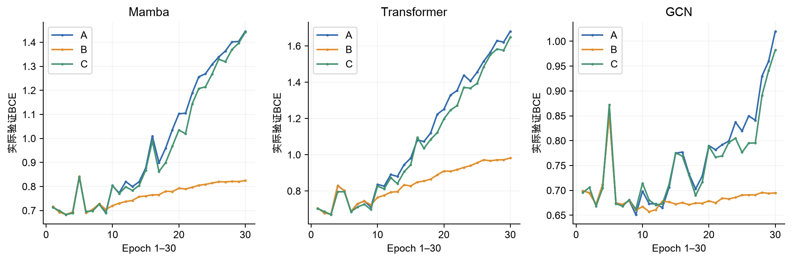

237项拟合完成，7份最终模型冻结；193人测试未评分。以下均为开发结果，选参偏乐观，不是独立测试结论。
200项神经开发、30项逻辑回归开发与7项最终重拟合全部完成；总计237项。01:15启动、09:02结束，约7小时47分。测试集仍锁定。

图是什么：比较冻结选择规则选出的开发配置；不是最终193人测试成绩。神经网络为五折等权再两种子平均，LR为五折均值。ACC固定阈值0.5。
结果：Mamba64固定LR第10轮：AUROC0.7184，ACC64.74%；Transformer64降LR第10轮：0.7212，65.84%；GCN64降LR第11轮：0.6938，63.64%。原始FC+LR C=0.001：0.7221，67.52%，BCE0.6274。
怎么看：神经网络尚未在这张开发表超过LR；三个架构都选64通道。开发分数参与选参，偏乐观，不能宣称独立测试胜负。两种子不是两个人群。
汇报时怎么说：“这轮先把数据和候选统一。237项计算完成，但测试还没打开。开发结果中，线性参照仍有竞争力，复杂网络尚未显示明确优势。”
A固定1e-4；B只增加验证BCE平台期降LR；C固定1e-4，仅线性头前Dropout0.1。每个配置均五折双种子、完整100轮。

为什么比较：分别检验调整学习率和轻量正则化，保持初始化、样本顺序及其余设置配对；没有B+C联合组。图中连接线是配置对比，不是时间曲线。
结果：64通道A/B/C AUROC：Mamba0.7184/0.7151/0.7173；Transformer0.7199/0.721230/0.721197；GCN0.6927/0.6938/0.6930。B与C在Transformer上差约0.000033，不能说B明显更好。
问题：每个配置用自身共同最佳轮次汇总，因此只是开发最优比较。降LR明显减轻末轮BCE恶化，却没有大幅提高早期最高AUROC；头前0.1 Dropout也未解决后期过拟合。
汇报时怎么说：“调度主要改变训练后半段的恶化程度，不能只因为曲线更平就说分类能力明显提升。Dropout的结论也只针对当前位置和强度。”
D与A-GCN结构、参数量、初始化和输入配对，只把归一化传播矩阵换为I。输入仍包含完整正负FC。D不参与最终模型选择。

图是什么：统一在A各宽度选出的第8轮读取A和D。灰线为同fold同seed配对，粗线为十次运行均值；不是十个独立队列。
结果：64通道AUROC从0.6927到0.7259，10/10配对提高；128通道从0.6891到0.7110，9/10配对提高。两个种子的均值差均为正。
怎么看：支持当前正边667条、两层GCN的邻居聚合没有带来收益，可能损害表现；不能仅据此证明过平滑或所有图模型无效。D保留完整FC特征，不能称没有网络信息。
汇报时怎么说：“最有价值的机制信号是：在相同训练轮次，保留自身特征比加入当前邻居聚合更好。下一步解释应集中在传播和建图，但本轮不临时把D加入测试候选。”
固定展示第1开发折、种子1、64通道；九个小图分别对应三架构×A/B/C。每条线来自一次真实训练，无平滑、无折平均。

图是什么：蓝线为eval模式训练BCE，橙线为验证BCE；C组关闭Dropout后评价训练集，避免将随机屏蔽效应误当泛化差距。online BCE另存原始记录。
怎么看：训练误差下降同时验证误差上升，显示后期过拟合。跨折均值中，64通道第100轮A/B验证BCE为Mamba2.271/0.900、Transformer2.888/1.039、GCN2.202/0.782；这些均值是补充数字，不是图中曲线。
汇报时怎么说：“模型能拟合训练集，但长时间训练让验证概率误差变大。最终模型按开发规则只重拟合到10或11轮，没有采用严重过拟合的第100轮。”
与上一页相同的第1折、种子1、64通道九次运行。散点为每个实际更新步的裁剪前总梯度L2，纵轴为对数坐标；虚线为裁剪阈值1。

梯度是什么：这是分类BCE对当前所有可训练参数的梯度范数，包含输入映射、骨干、输出Norm和分类头；没有重建Decoder。不是重建MSE梯度。
怎么看：小批次波动和偶发尖峰不直接等于爆炸；需同时看非有限值、loss、裁剪比例和实际更新。总梯度受模型参数量与训练状态影响，不能按绝对高低给架构排名。
汇报时怎么说：“梯度图用于判断优化是否稳定、是否频繁裁剪；它不能替代验证指标。即使梯度变小，验证表现仍可能恶化。”
固定第1开发折、种子1、64通道。上排是B组每轮实际使用LR，A/C保持1e-4；下排仅画每10步真实保存的参数更新采样点。

为什么放一起：AdamW下参数更新不等于学习率乘原始梯度；同时展示两者，避免把梯度下降直接解释为参数几乎不再学习。
最终设置：Transformer与GCN选中B，最终重拟合按十条开发实际LR轨迹逐轮取低中位数重放：第1–8轮1e-4，第9轮起5e-5；分别到第10、11轮。全开发没有用测试集驱动调度。
边界与状态：已有历史用途披露；966中89例any_fail标记保留，家庭信息未知。193人测试未评分。开发模型、scaler、源码和选择hash已冻结，开启测试需单独明确指令。
汇报时怎么说：“训练后期的改善主要体现在更受控的更新与概率误差，但是否能泛化仍要看已锁定模型的终点评价。”
每个配置使用五折双种子共同最佳轮次，分别列出两种子。D自身最佳仅描述，主要机制对照仍使用A的第8轮。
| arm | condition | width | seed | common_epoch | AUROC | ACC | BCE | sensitivity | specificity | diagnostic_only |
|---|---|---|---|---|---|---|---|---|---|---|
| Mamba | A | 64 | 1 | 10 | 0.713553 | 0.651965 | 0.711643 | 0.571714 | 0.724691 | False |
| Mamba | A | 64 | 2 | 10 | 0.723314 | 0.642924 | 0.718070 | 0.571381 | 0.707287 | False |
| Mamba | A | 128 | 1 | 5 | 0.711088 | 0.657109 | 0.698030 | 0.601148 | 0.707347 | False |
| Mamba | A | 128 | 2 | 5 | 0.718779 | 0.648052 | 0.698956 | 0.620918 | 0.673201 | False |
| Transformer | A | 64 | 1 | 10 | 0.714121 | 0.645480 | 0.740060 | 0.626175 | 0.663264 | False |
| Transformer | A | 64 | 2 | 10 | 0.725673 | 0.668806 | 0.763073 | 0.603776 | 0.726859 | False |
| Transformer | A | 128 | 1 | 5 | 0.717322 | 0.668823 | 0.734520 | 0.628064 | 0.704998 | False |
| Transformer | A | 128 | 2 | 5 | 0.719542 | 0.644240 | 0.749935 | 0.648612 | 0.641463 | False |
| GCN | A | 64 | 1 | 8 | 0.691104 | 0.627348 | 0.676446 | 0.598889 | 0.653297 | False |
| GCN | A | 64 | 2 | 8 | 0.694322 | 0.632468 | 0.665746 | 0.578934 | 0.680428 | False |
| GCN | A | 128 | 1 | 8 | 0.680008 | 0.626167 | 0.804283 | 0.415550 | 0.815417 | False |
| GCN | A | 128 | 2 | 8 | 0.698270 | 0.619690 | 0.768311 | 0.497705 | 0.729178 | False |
| Mamba | B | 64 | 1 | 10 | 0.712029 | 0.662313 | 0.682489 | 0.590337 | 0.727160 | False |
| Mamba | B | 64 | 2 | 10 | 0.718081 | 0.646778 | 0.712667 | 0.562829 | 0.722102 | False |
| Mamba | B | 128 | 1 | 5 | 0.711088 | 0.657109 | 0.698030 | 0.601148 | 0.707347 | False |
| Mamba | B | 128 | 2 | 5 | 0.718779 | 0.648052 | 0.698956 | 0.620918 | 0.673201 | False |
| Transformer | B | 64 | 1 | 10 | 0.718606 | 0.654571 | 0.711216 | 0.609478 | 0.695242 | False |
| Transformer | B | 64 | 2 | 10 | 0.723855 | 0.662329 | 0.716544 | 0.584820 | 0.732008 | False |
| Transformer | B | 128 | 1 | 5 | 0.717322 | 0.668823 | 0.734520 | 0.628064 | 0.704998 | False |
| Transformer | B | 128 | 2 | 5 | 0.719542 | 0.644240 | 0.749935 | 0.648612 | 0.641463 | False |
| GCN | B | 64 | 1 | 11 | 0.692062 | 0.642916 | 0.684688 | 0.595594 | 0.685396 | False |
| GCN | B | 64 | 2 | 11 | 0.695451 | 0.629870 | 0.686343 | 0.568308 | 0.685005 | False |
| GCN | B | 128 | 1 | 6 | 0.691481 | 0.614386 | 0.738863 | 0.656757 | 0.576784 | False |
| GCN | B | 128 | 2 | 6 | 0.685948 | 0.613222 | 0.725880 | 0.726657 | 0.510961 | False |
| Mamba | C | 64 | 1 | 10 | 0.711332 | 0.650674 | 0.703854 | 0.571714 | 0.722313 | False |
| Mamba | C | 64 | 2 | 10 | 0.723243 | 0.641617 | 0.711277 | 0.574047 | 0.702379 | False |
| Mamba | C | 128 | 1 | 6 | 0.720248 | 0.647977 | 0.721554 | 0.670233 | 0.628455 | False |
| Mamba | C | 128 | 2 | 6 | 0.708878 | 0.649376 | 0.702534 | 0.691411 | 0.611653 | False |
| Transformer | C | 64 | 1 | 8 | 0.720535 | 0.661039 | 0.679542 | 0.615106 | 0.702499 | False |
| Transformer | C | 64 | 2 | 8 | 0.721860 | 0.661005 | 0.684326 | 0.584894 | 0.729991 | False |
| Transformer | C | 128 | 1 | 5 | 0.718026 | 0.673992 | 0.715680 | 0.627990 | 0.714694 | False |
| Transformer | C | 128 | 2 | 5 | 0.719622 | 0.631278 | 0.731653 | 0.654017 | 0.611834 | False |
| GCN | C | 64 | 1 | 9 | 0.687088 | 0.628655 | 0.699051 | 0.600815 | 0.653568 | False |
| GCN | C | 64 | 2 | 9 | 0.698843 | 0.638969 | 0.663645 | 0.652647 | 0.625926 | False |
| GCN | C | 128 | 1 | 6 | 0.692320 | 0.614361 | 0.745861 | 0.640355 | 0.591298 | False |
| GCN | C | 128 | 2 | 6 | 0.684810 | 0.600268 | 0.726300 | 0.701962 | 0.508642 | False |
| GCN | D | 64 | 1 | 10 | 0.727599 | 0.668831 | 0.664102 | 0.568937 | 0.759018 | True |
| GCN | D | 64 | 2 | 10 | 0.735452 | 0.654445 | 0.656659 | 0.606553 | 0.697109 | True |
| GCN | D | 128 | 1 | 6 | 0.716834 | 0.633783 | 0.704203 | 0.640133 | 0.628214 | True |
| GCN | D | 128 | 2 | 6 | 0.713159 | 0.661014 | 0.677147 | 0.663680 | 0.658567 | True |

保留所有200次神经开发历史、配置与完成回执，30次LR及7次最终拟合回执；逐步梯度仅取本报告展示的10次64通道第1折种子1记录。不是全部逐步日志的镜像。权重、原始FC、ID和逐人预测留在服务器，不包含在公开资料。后台已停止计算并保持测试锁定。